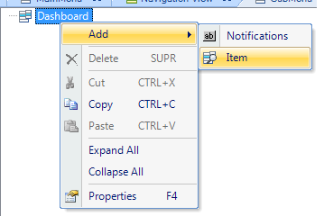

Calling objects from Menu Events
This document will guide you through an easy example of the objects that may be called, and how to call them from a Menu object. You can call different objects and perform numerous different actions from a Menu. Each option in a Menu can be created by right-clicking on the root_element/Add/Item.  An event will be triggered when a user taps on one of the items in the Menu. So, you want to have an Event for each Item. To add an Event (temporary restriction) go to the Events tab and add a new event with a unique name. To link an Event to the Item of the Menu you have the Name property. The value of this property will be the name of the event that will be executed when the user taps on that option. The first distinction is that an event in a Menu can call one object or make a composite call. It's easy to call an object, with the user tapping on the icon/tab/line (to see different ways to show a Menu read Several ways to show a Menu) of the item, to invoke the event and call only one object. The Composite call can help you add a more sophisticated behavior to your Menu. Call Work With Pattern Instances with associated Business ComponentFor this tutorial, the following Transaction object will be used. Apply the Work With for Smart Devices object to the Transaction (for further information see Applying Work With for Smart Devices Pattern). Let's start with a basic example. Suppose you want an item in your Menu to call a List node of a Work With for Smart Devices object. a. Now create a new Event on the Events tab with the following code:
Event 'WWSDList'
WorkWithDevicesPerson.Person.List()
EndEvent
Add a new item to your Menu as shown in the image above. For the Name property use the event name, in this case: WWSDList. By tapping on this element at run-time, you'll be able to go to the list of Persons.
b. Now let's call the Detail view of a WorkWith Pattern. You want to call the View Mode of the Section (General) in the Detail node, so you can view the details on a Person. You have to take into consideration that the Detail node of an instance of a WorkWith with associated BC receives a parameter; the parameter is the PK of the Transaction object. So, in your call, you have to pass the value of the PK of the Person you want to update. In this case, you will make the Event as follows:
Event 'WWSDDetail'
WorkWithDevicesPerson.Person.Detail(2)
EndEvent
Add a new item to the Menu and set the Name property with WWSDDetail.
Call the BCs of a WW in their different Modes (Insert, Update, Delete)Sometimes you need or want to call a Transaction directly in one of the modes that the Transaction can be called (Insert, Update, Delete). To do so, the event should be as follows:
Event 'TRNInsert'
WorkWithDevicesPerson.Person.Detail.Update(2)
EndEvent
If you change the last part you can invoke the Transaction in Insert mode or Delete mode. Call any action of the Smart Device APICalling objects from the Smart Device API is another way to use your Menu Items. For this example, you will call the SendMessage method from the Interop External Object. (For more information on the Smart Device API object, read the document HowTo: Using SendMessage from Interop in Smart Devices). The event programming should be:
Event 'SDApiCall'
Interop.SendMessage("A message", 1234342)
EndEvent
Set the Name property with SDApiCall. This will invoke the SendMessage method with the parameters specified. Call other MenusSometimes you can have many Menus, where one of them can call another. Create a new Menu; set the Name property with SubMenu and save it. Note: it makes no difference if there are no items on that Menu. The event will be as follows:
Event 'SubMenu'
SubMenu.Call()
EndEvent
Add a new Item to the Menu and set the Name property with SubMenu. Call an Entry Panel with no Business ComponentLet's create a new WorkWith object as shown in the following image: Create a new Event with the following code:
Event 'EntryPanel'
EntryPanel.EntryPanel.Detail.Edit()
EndEvent
Lastly, add a new item to the Menu and set the Name property with EntryPanel. Videos
See also |


| Backlinks |
| Category:Menu object |